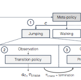

|
Sriram Somasundaram
I am an undergraduate researcher in Computer Science at USC, where I am advised by Prof. Joseph J. Lim. I am a part of USC's Cognitive Learning for Vision and Robotics Lab, and my research interests are reinforcement learning, robotics, and machine learning. I am completing my undergrad at USC in December 2018
I am completing my undergrad at USC in December 2018 with a Bachelors in Computer Science. In 2015, I was a research intern at the Mellins Lab at Stanford University under Prof. Elizabeth Mellins. I've also interned at Riot Games, Raytheon, and Quid.
Email /
CV /
Google Scholar /
LinkedIn
|
|
|
Research
I'm interested in investigating how learning algorithms can enable machines to acquire complex skills in real-world settings. My research experiences thus far delve into learning and interpreting deep representations for complex skills and enabling machines to smoothly compose and execute skills for hierarchical tasks.
|
|
|
Neural program synthesis from diverse demonstration video
Shao-Hua Sun*,
Hyeonwoo Noh*,
Sriram Somasundaram,
Joseph J. Lim,
International Conference on Machine Learning (ICML), 2018
project page
We propose a neural program synthesizer that explicitly synthesizes underlying programs from behaviorally diverse and visually complex demonstration videos.
|
|

|
Composing Complex Skills by Learning Transition Policies with Proximity Reward Induction
Youngwoon Lee*,
Shao-Hua Sun*,
Sriram Somasundaram,
Edward Hu*,
Joseph J. Lim,
International Conference on Learning Representations (ICLR), 2019 in review
project page
Transition policies enable agents to execute learned skills smoothly to perform complex tasks.
|
|